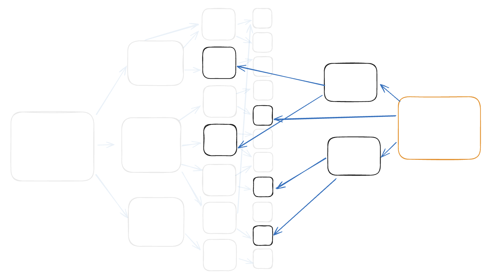
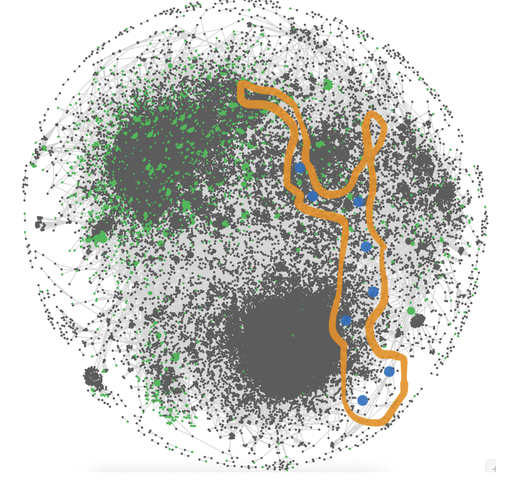
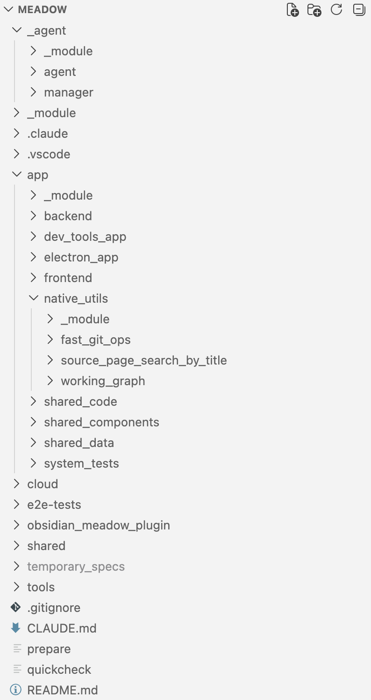
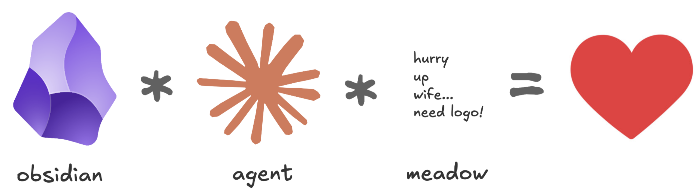

meeting 2026-03-09 - Showing Nate Meadow
Background
Sites like Andy Matuschack's Working Notes are amazing. (They always have been, but now they're the blueprint for context graphs, too)
You can take your notes in that style, locally, using Obsidian. If you follow his approach where you shou prefer associative ontologies to hierarchical taxonomies, then everything becomes densely linked, and you can end up with surprising insights because the process of working with the notes helps you see connections.
Now you want to publish a site like Andy's from your notes graph on a particular topic (because you want to share stuff with peers or whatever), but there's so much sharing going on.


Examples!
Making changes to an existing site
In considering dark software factories I've been adding a few more concepts to Annotated version of 'Welcome to Gas Town'
What did we see?
- source graph change identification (changes in content and in newly-added pages)
- careful change management ("tracking" the new nodes, then separately reviewing what changed in the site's HTML, and then publishing)
Creating a new site
- make the site for mark with considering dark software factories
Updating the "site for nate" with this page's stuff
- Show how meadow AI opportunity can be expanded with inlink depth
- Look for any oulink gaps to see if there's interesting stuff that isn't being shared
- Customize the style (see the HTML differences)
Design stuff
design motivation -- local and design motivation -- support large sites and design motivation -- publish a huge number of sites
Technical stuff
TypeScript Electron App with backend, frontend, and a smattering of Rust binaries for high-speed stuff.

Hard problems
Few people take notes like this
Yep. But... things are changing. markdown graphs and agents are hitting their stride in early 2026 and context graphs are suddenly all the rage. People are going to dragged to this way of doing things.

meadow-related recent changes in the environment and "why now" in early 2026?
Multi-site management stuff
- global filters
- In "site for ricky" the health filter stuff is disabled
- global style config
- "find in sites"